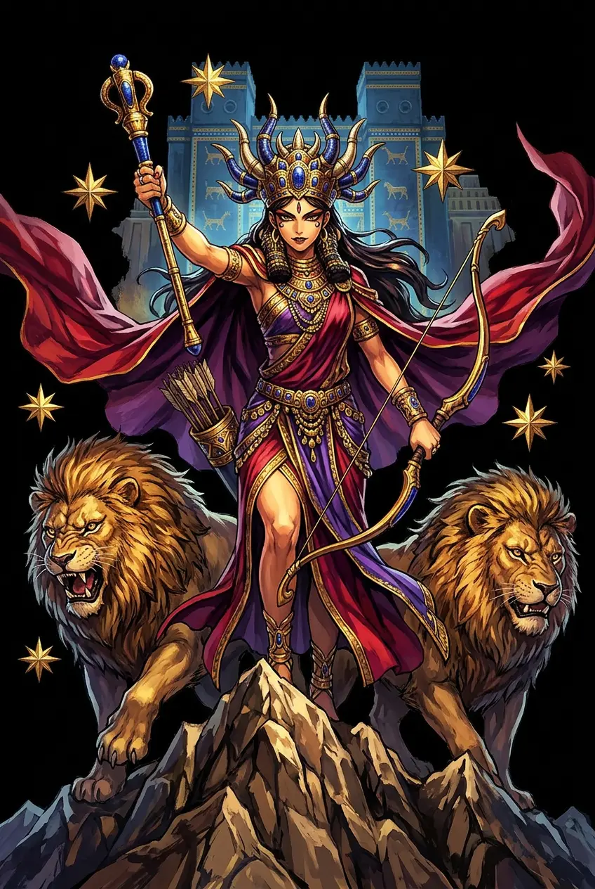
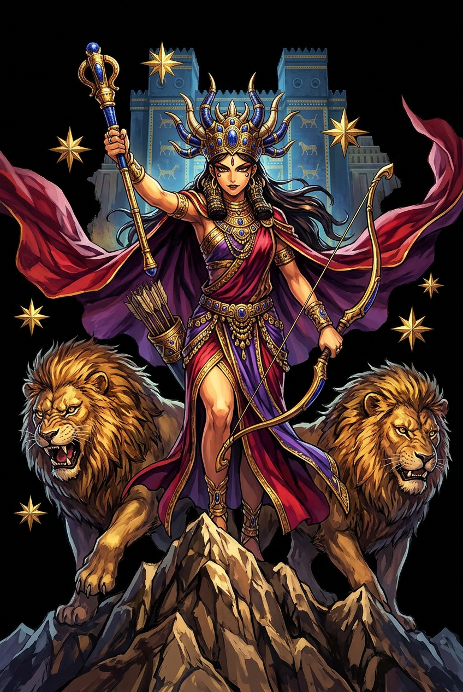

The Authentic Orthography
Love, War, Fertility, Venus · The Morning Star at War

Unicode restoration and ASCII comparison
𒀭𒀹𒁯
The name in its original Mesopotamian form. Ištar (𒀭𒀹𒁯) is attested in the source tradition — “Lady of Heaven (Akkadian Ištar)”. Its original diacritics and script distinctions carry the full phonetic and orthographic weight of the source tradition.
ishtar
Reduced to plain ishtar, the name loses everything that made it specific: original diacritics and script distinctions. What remains is an ASCII string that machines can parse but that no longer speaks with its original voice.
Ištar
The Unicode restoration recovers what ASCII flattened. Ištar restores original diacritics and script distinctions, returning the name to its original written dignity. The domain encodes to Punycode, but the browser displays the truth.
Ištar.com → xn--itar-g6a.com
The non-ASCII characters in Ištar are encoded while the ASCII remains visible. To the DNS, it is Punycode. To humanity, it is Ištar.
How Ištar travels from ancient script to the modern URL
Akkadian Ištar continues Sumerian Inanna; the name is associated with the planet Venus and with the twin domains of love and war.
Love, War, Fertility, Venus
The Unicode restoration Ištar preserves vowel length; the cuneiform form is not registrable in .com.
How Ištar was spoken
Love, War, Fertility, Venus
Ištar is the most volatile of the great Mesopotamian goddesses. She is the planet Venus, the morning and evening star; she is sexual desire and reproductive power; she is the frenzy of battle and the protector of kings. No other deity in the ancient Near East so thoroughly unites what later cultures would separate into Aphrodítē and Árēs.
The eight-pointed star of Venus; Ištar is the brightest planet and the celestial sign of the goddess.
The sacred marriage, the life-giving womb, the power that turns desire into offspring and fields into harvest.
She rides into battle with weapons at her shoulders; kings claim her as their divine patron in war.
The lion is her warlike aspect; the dove is her amorous aspect — power and tenderness in one deity.
Stories of Ištar
Ištar's myths are stories of extremity: descent into death, demand for the impossible, and the transformation of gender and power. She is never merely an object of desire; she is desire in motion, war in motion, the star that crosses the boundary between heaven and the underworld.
In the Sumerian Descent of Inanna, the goddess abandons heaven and earth to descend to the netherworld ruled by her sister Ereshkigal. At each of the seven gates she is stripped of a garment or ornament until she stands naked before the throne of the dead. She is killed and hung on a hook. Her faithful servant Ninshubur persuades Enki to create two sexless beings who revive her with the food and water of life. The myth is a meditation on death, sovereignty, and the price of rebirth.
In Tablet VI of the Epic of Gilgamesh, Ištar proposes marriage to Gilgamesh, king of Uruk. He rejects her, listing the fates of her previous mortal lovers — Dumuzi, the shepherd; the lion; the horse; the shepherd-bird; and the gardener Išullanu. Enraged, Ištar demands the Bull of Heaven from Anu and unleashes it on Uruk. Gilgamesh and Enkidu kill the bull, and Enkidu's subsequent death is the punishment for this hubris.
The Sumerian sacred-marriage songs celebrate the union of Inanna and Dumuzi, the shepherd-king. Their love ensures the fertility of the land and the legitimacy of the king. In the Descent, however, Inanna chooses Dumuzi to take her place in the underworld for half the year, so that his sister Geshtinanna may take the other half. The myth explains the cycle of the seasons and the alternating presence of life and death in the agricultural year.
In the Enuma Elish, Marduk's victory over Tiamat echoes older Sumerian narratives in which Inanna confronts the forces of chaos. In Atrahasis, Ištar/Belet-ili mourns the destruction of her human children and helps broker the post-diluvian order. Her capacity to be both destroyer and mourner makes her the emotional center of Mesopotamian myth: the goddess who loves humanity enough to grieve it.
Ištar refuses to be one thing. She is the morning star and the evening star, the lover and the warrior, the goddess who descends into death and returns clothed in her own power. In a world that likes its deities sorted by function, she is a reminder that the most ancient sacred forces were polymorphous: desire and violence, fertility and mourning, all braided into a single brilliant light.
Enter Extended Lore